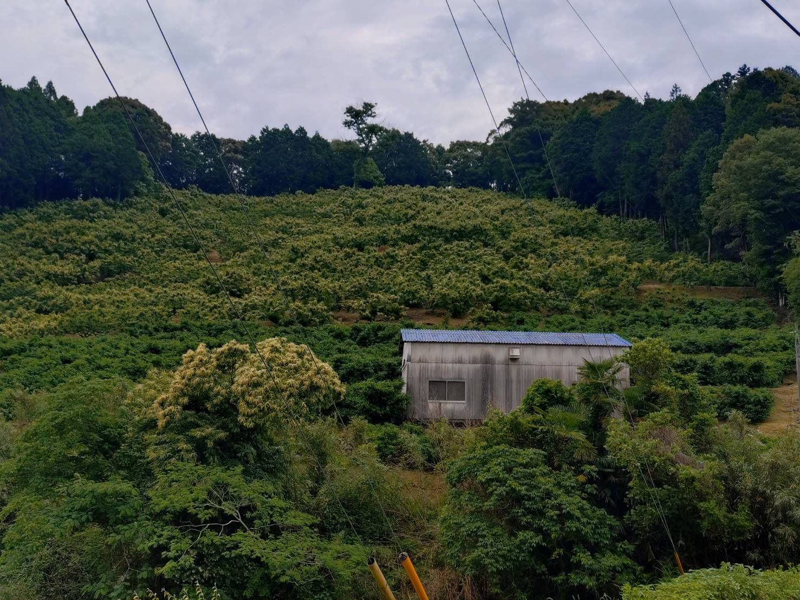
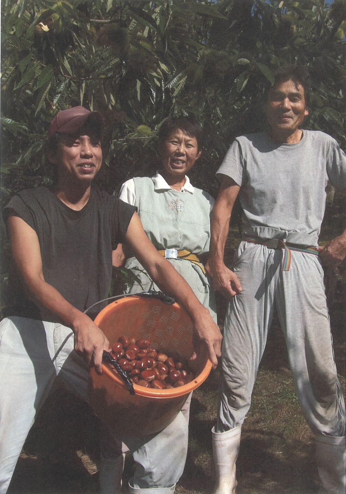
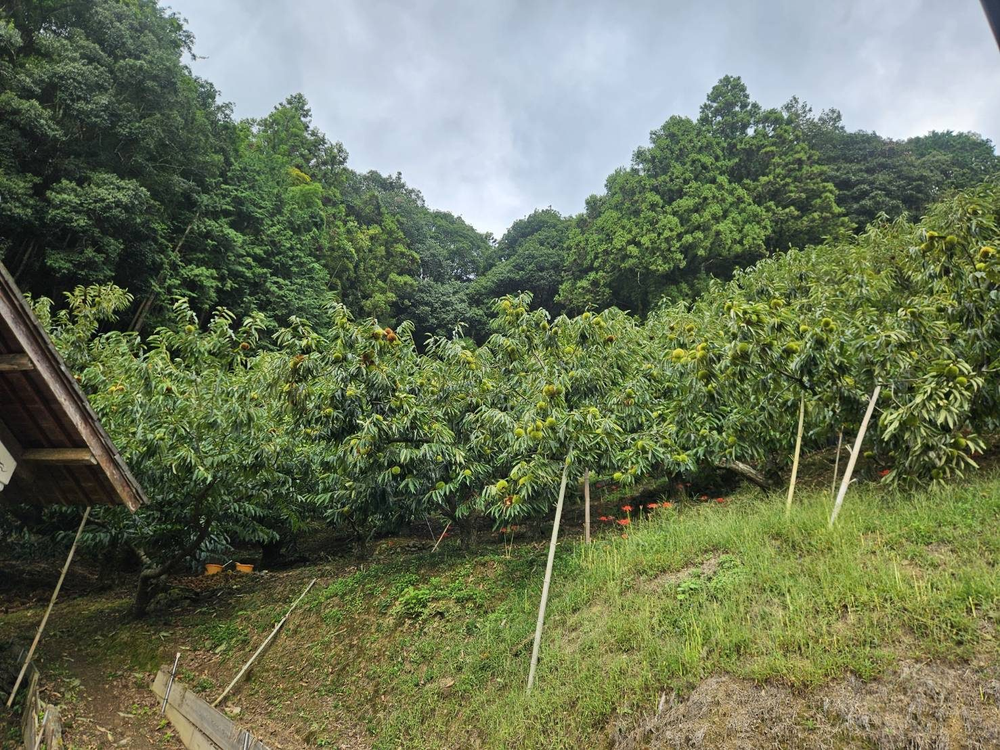
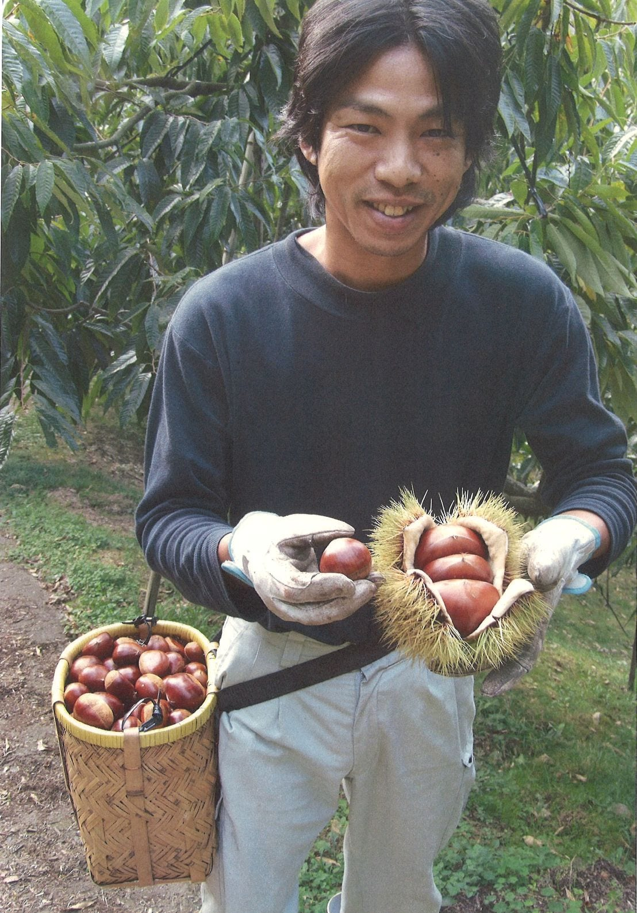

山あいで受け継ぐ、三代の継承
愛媛県西予市城川町田穂。この山あいの傾斜地で、私たちは三代にわたって栗を育ててきました。農園のなりたちとアクセスをご案内します。
「祖父が植えた最初の一本から始まり、父が育て上げた園地を、三代目が受け継ぎ未来へと繋ぐ」
愛媛県西予市城川町田穂。清らかな谷風が吹き抜ける美しい山あいの傾斜地に、私たちの栗畑は広がっています。かつて祖父がこの土地の適性を見込み、初めて栗の木を植えたことから歴史が始まりました。その後、父が一軒の独立した果樹農家として園地を広げて一本一本を育て上げ、現在は三代目の私が、先代から受け継いだ大切な技術と情熱を胸に園地に立っています。
現在、私たちの栗園は2.3ヘクタールの広さを有し、年間およそ6トンの収穫規模を維持しています。先代から受け継がれた貴重な栽培の知恵と土づくりの基本を守りながらも、将来的にはこの豊かな傾斜地の環境を活かして、柚子やキウイ、アボカドの栽培、販売など、次の世代へ向けた新たな挑戦も視野に入れています。

家族の手で、受け継ぐ
秋の収穫の最盛期を迎えると、園地は家族総出の活気に包まれます。祖父から父へ、そして父から三代目へと代々受け継がれてきたものは、目の前にある栗の木々だけではありません。美味しい栗を一粒ずつ厳しく見極める確かな目と、どれほど忙しくとも手間を惜しまない誠実な姿勢が、この豊かな田穂の畑とともに今も脈々と受け継がれています。

山あいの気候が、栗を育てる
城川町田穂の山間地特有の激しい寒暖差と、南向きの斜面に降り注ぐやわらかな太陽の光。そして山谷を静かに渡る風という厳しいながらも恵まれた自然環境の中で、栗はゆっくりと時間をかけて、確かに大きく育ちます。園地を青く覆う苔や、剪定枝を還元したふかふかの土壌が、乾燥や急な温度変化から栗の繊細な根を守り抜いているのです。

三代目・小屋敷健太郎
一度は途絶えかけた幻の系統を絶対に絶やすまいと、並々ならぬ熱意で独自の改良と工夫を積み重ねてきました。栽培が極めて難しい品種だからこそ、土壌づくりから自家での接ぎ木作業、そして収穫後の一粒ずつの徹底的な検品にいたるまで、すべての工程に一切の妥協なく手を尽くしています。ここでしか出会えない最高の栗をお届けしたい——その想いが、私をこの園地に立たせ続けています。
アクセス・概要
| 農園名 | 小屋敷農園 |
|---|---|
| 所在地 | 愛媛県西予市城川町田穂 ※詳しい場所はお問い合わせください |
| 主な品目 | 栗（銀寄・石鎚・大峰・筑波・幻の品種 K2(改)俗称）／将来：柚子・キウイ・アボカド |
| 栗の時期 | 8月後半〜（早生）、9月中旬〜下旬（中生・本番）。冷凍で通年お届け予定 |
| お問い合わせ | お問い合わせフォーム |